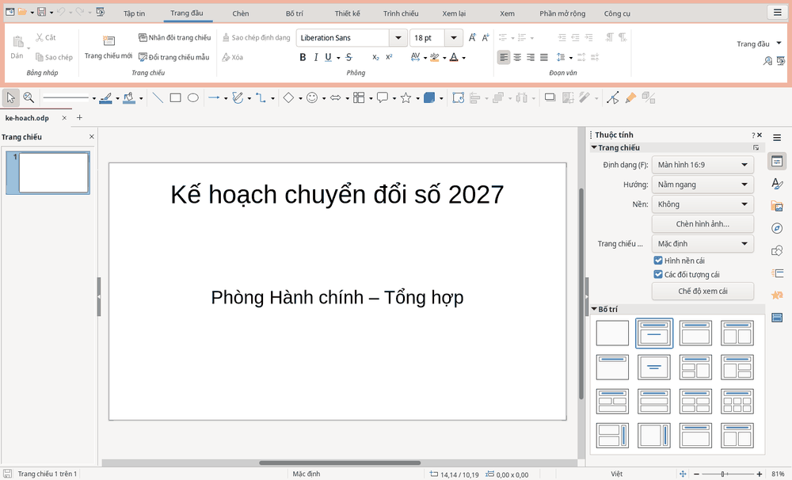

Trình chiếu
Trình chiếu
Dùng HST Slides để soạn bài thuyết trình và báo cáo trước hội nghị.
Tạo trang chiếu và thêm nội dung
- Chọn trên .
- Để thêm trang chiếu, chọn .
- Chọn bố cục trong mục trên bên phải.
- Bấm vào ô dành cho tiêu đề hoặc văn bản để gõ nội dung.
Bạn có thể chèn ảnh, bảng và biểu đồ từ thẻ .

Chạy và thoát trình chiếu
| Thao tác | Phím tắt |
|---|---|
| Trình chiếu từ trang đầu | F5 |
| Trình chiếu từ trang đang chọn | Shift+F5 |
| Thoát trình chiếu | Esc |
Hiệu ứng chuyển trang và hiệu ứng động
Các hiệu ứng này có ở bên phải, tại biểu tượng chuyển tiếp và hoạt hình.
Để lưu thành tệp PowerPoint, xem Lưu tệp Word, Excel, PowerPoint.